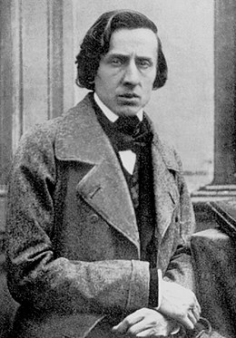

Биография
Происхождение и семья
Отец композитора — Николя Шопен (1771[прим. 5]—1844), из простой семьи[6], во второй половине 1787 года переселился из Франции в Польшу и начал работать на табачной фабрике, принадлежавшей его соотечественнику[7]. В 1795 году он становится учителем в семье Лончиньских, а с 1802 года воспитывал детей графа Скарбека в его имении Желязова-Воля. В 1806 году Николя Шопен женился на дальней родственнице Скарбеков Текле Юстине Кшижановской[9] (1782—1861), служившей у графов экономкой[5]. Род Кшижановских (Кржижановских) герба Свинка ведёт своё происхождение с XIV века; его представители владели деревней Кшижаново около Косцяна. К роду Кшижановских принадлежал, в том числе, Владимир Кржижановски, племянник Юстины. По сохранившимся свидетельствам, мать композитора получила хорошее образование, владела французским языком, была чрезвычайно музыкальна, хорошо играла на фортепиано, обладала красивым голосом. Своей матери Фридерик обязан первыми музыкальными впечатлениями, привитой с младенческих лет любовью к народным мелодиям. Желязова-Воля, где родился Шопен, и Варшава, где он жил с 1810 до 1830, во время Наполеоновских войн до 1813 были на территории Варшавского Герцогства, вассального Наполеоновской Империи, а после 3 мая 1815 года, по итогам Венского конгресса — на территории Царства Польского[10] (Królestwo Polskie), вассального Российской Империи. Осенью 1810 года, спустя около семи месяцев после рождения сына, Николя Шопен переселился в Варшаву. В Варшавском лицее он, благодаря протекции Скарбеков, получил место[12] после смерти преподавателя пана Маэ. Шопен был учителем французского и немецкого языков, а также французской литературы, содержал пансион для воспитанников лицея, который пользовался хорошей репутацией. Интеллигентность и чуткость родителей спаяли всех членов семьи любовью и благотворно сказывались на развитии одарённых детей. Кроме Фридерика в семействе Шопенов было три сестры: старшая — Людвика, в замужестве Енджеевич, бывшая его особенно близким преданным другом, и младшие — Изабелла и Эмилия. Сёстры обладали разносторонними способностями, а рано умершая Эмилия — выдающимся литературным талантом.
Детство
Существует анекдот о том, что ещё трёх лет от роду Шопена застали ночью за роялем, на котором он подбирал танцевальную мелодию, которую Юстина играла для пансионеров днём, и пояснил при этом, что хочет подменять мать, если она устанет. Первой учительницей Шопена стала его старшая сестра Людвика, которая была очень музыкальна. Позднее в письме от ноября 1825 года Шопен хвалит сочинённую ею мазурку. Молодого Шопена учили музыке, возлагая на него большие надежды. Пианист Войцех Живный (1756—1842), чех по происхождению, начал заниматься с 7-летним мальчиком. Живный считал себя представителем школы Баха, с которым Шопен, таким образом, познакомился в самом раннем возрасте и пронёс почтение к лейпцигскому кантору через всю жизнь. Также он играл Моцарта, Гайдна, Бетховена, Гуммеля, Риса, Йировца и других современных пианистов. Восьми лет, в конце февраля 1818 года, Шопен впервые выступил на публике с концертом Йировца и с тех пор играл у друзей семьи и в аристократических салонах. Его сравнивают с Моцартом. В 1819 году певица Анджелика Каталани, восхищённая исполнением, дарит Шопену золотые часы с гравировкой[15]. Исполнительский талант мальчика развивался настолько быстро, что к двенадцати годам Шопен не уступал лучшим польским пианистам. Живный отказался от занятий с юным виртуозом, заявив, что ничему больше не может научить его[16]. Также Живный, будучи, как свойственно эпохе, хорошим импровизатором, начал и композиторское образование Шопена. Его первое изданное произведение, полонез g-moll (1817), вероятно, было записано и отредактировано Живным, потому что сам Шопен ещё не владел нотной грамотой. Также от того времени дошли полонез B-dur и «Военный марш», исполнявшийся в Варшаве на парадах. Вероятно, тому же времени принадлежит мазурка D-dur. Наиболее ранний (датированный автором 23 апреля 1821 года) сохранившийся автограф Шопена — полонез As-dur. Эти произведения стоят в общем ряду своей эпохи и оригинальными, присущими стилю Шопена, чертами, разумеется, не обладают[17]. После домашнего обучения, обусловленного хрупким здоровьем, Шопен в 1823—1826 годах обучается в Варшавском лицее, не интересуясь математикой и естественными науками, но проявляя интерес к истории литературы и истории Польши. Историю Польши он по вечерам «рассказывал» при помощи рояля.
Юность
С двенадцати лет (1822) Шопен начал свои частные теоретические занятия у композитора Юзефа Эльснера, друга семьи Шопенов. В 1826 году Шопен перешёл к Эльснеру в Высшую школу музыки. Эльснер характеризовал его словами «Музыкальный гений» и не ограничивал какими-либо правилами или методами. В своём учебном курсе Эльснер опирался на материал польской народной песни[19]. Среди школьных друзей Шопена — Титус Войцеховский,[20] Юлиан Фонтана, Игнаций Добжиньский, Т. Нидецкий, А. Орловский, Ю. Новаковский, А. Рембелиньский и другие польские музыканты и композиторы. С пианистом Рембелиньским Шопен импровизирует на двух роялях. В сочинениях для оркестра и хора Шопен нередко уступает другим ученикам, но главенство его пианистического искусства неоспоримо[21]. Поездки в Берлин, Дрезден, Прагу, где он побывал на концертах выдающихся музыкантов, усердно посещал оперные театры и картинные галереи, способствовали его дальнейшему развитию.
Зрелые годы. За границей
С 1829 года начинается артистическая деятельность Шопена. Он выступает в Вене, Кракове, исполняя свои произведения. Возвратившись в Варшаву, он её покидает навсегда 5 ноября 1830 года. Эта разлука с родиной стала причиной его постоянной скрытой скорби. В 1830 году прибыла весть о вспыхнувшем восстании за независимость в Польше. Шопен мечтал вернуться на родину и принять участие в боях[22]. Сборы закончены, но по дороге в Польшу его застала страшная весть: восстание подавлено, руководителя взяли в плен. Проехав Дрезден, Вену, Мюнхен, Штутгарт, он в 1831 году приехал в Париж. В пути Шопен написал дневник (так называемый «Штутгартский дневник»), отражающий его душевное состояние во время пребывания в Штутгарте, где его охватывало отчаяние из-за краха Польского восстания. Шопен глубоко верил в то, что его музыка поможет родному народу добиться победы. «Будет Польша блестящая, могучая, независимая!» — так он написал в своем дневнике. В этот период Шопен пишет свой знаменитый «Революционный этюд». Первый концерт Шопен дал в Париже в 22 года. Успех был полный. В концертах Шопен выступал редко, но в салонах польской колонии и французской аристократии слава Шопена росла чрезвычайно быстро, Шопен приобрёл множество преданных поклонников, как в артистических кругах, так и в обществе. Высоко оценил пианизм Шопена Калькбреннер, предложивший тем не менее ему свои уроки. Впрочем, эти уроки быстро прекратились, но дружба между двумя великими пианистами продолжалась много лет. В Париже Шопен окружил себя молодыми талантливыми людьми, которые разделяли с ним преданную любовь к искусству. В его окружение входили пианист Фердинанд Гиллер, виолончелист Франкомм, гобоист Бродт, флейтист Тюлон, пианист Стамати, виолончелист Видаль, альтист Урбан. Также он поддерживал знакомство с крупнейшими европейскими композиторами своего времени, среди которых были Мендельсон, Беллини, Лист, Берлиоз, Шуман. Со временем Шопен сам начал вести преподавательскую деятельность; любовь к преподаванию фортепьянной игры была отличительной чертой Шопена, одного из немногих великих артистов, которые посвятили этому много времени. В 1837 году Шопен почувствовал первый приступ болезни лёгких (с наибольшей вероятностью, это был туберкулёз). Много скорби вдобавок к расставанию с невестой ему принесла в конце тридцатых годов любовь к Жорж Санд (Аврора Дюпен). Пребывание на Мальорке (Майорке) вместе с Жорж Санд негативно отразилось на здоровье Шопена, он страдал там от приступов болезни. Тем не менее, многие величайшие произведения, в том числе 24 прелюдии, созданы именно на этом испанском острове. Зато он много времени проводил в сельской местности во Франции, где у Жорж Санд было имение в Ноане. Десятилетнее сожительство с Жорж Санд, полное нравственных испытаний, сильно подточило здоровье Шопена, а разрыв с ней в 1847 г. помимо того, что вызвал у него значительный стресс, лишил его возможности отдыхать в Ноане. Желая покинуть Париж, чтобы сменить обстановку и расширить свой круг знакомств, Шопен в апреле 1848 г. отправился в Лондон — концертировать и преподавать. Это оказалось последним его путешествием. Последний концерт на публике Фредерика Шопена состоялся 16 ноября 1848 года в Лондоне. Успех, нервная, напряжённая жизнь, сырой британский климат, а главное, периодически обострявшееся хроническое заболевание лёгких, — всё это окончательно подорвало его силы. Вернувшись в Париж, Шопен умер 5 (17) октября 1849 года. О Шопене глубоко скорбел весь музыкальный мир. На его похороны собрались тысячи поклонников его творчества. Согласно желанию покойного, на его похоронах известнейшими артистами того времени (среди них Полина Виардо пела партию сопрано в Tuba Mirum) был исполнен «Реквием» Моцарта — композитора, которого Шопен ставил выше всех других (а его «Реквием» и симфонию «Юпитер» называл своими любимыми произведениями), а также была исполнена его собственная прелюдия № 4 (ми-минор). На кладбище Пер-Лашез прах Шопена покоится между могилами Луиджи Керубини и Беллини. Композитор завещал, чтобы его сердце после смерти перевезли в Польшу. Сердце Шопена было, согласно его воле, отправлено в Варшаву, где оно замуровано в колонну церкви Святого Креста.
Творчество
Как отмечал в Энциклопедическом словаре Брокгауза и Ефрона Н. Ф. Соловьёв,
«Музыка Шопена изобилует смелостью,
изобразительностью и нигде не страдает
причудливостью. Если
после Бетховена явилась
эпоха новизны стиля, то, разумеется, Шопен один из
главных
представителей этой новизны. Во всём, что
писал Шопен, в его чудных музыкальных контурах
виден
великий музыкант-поэт. Это заметно в
законченных типичных этюдах, мазурках, полонезах,
ноктюрнах
и проч., в которых через край льется
вдохновение. Если в чём чувствуется известная
рефлективность, так это в сонатах и концертах, но
тем не менее и в них появляются удивительные
страницы, как, например, похоронный марш в
сонате op. 35, adagio во втором концерте.
К лучшим произведениям Шопена, в которые он вложил столько
души и музыкальной мысли, можно отнести
этюды: в них он внес,
помимо техники, составлявшей до Шопена главную и чуть ли не
единственную
цель, целый поэтический мир. Эти этюды дышат то
юношеской порывистой свежестью, как, например,
ges-dur, то
драматическим выражением (f-moll, c-moll). В эти этюды он вложил
мелодические и
гармонические красоты перворазрядные. Всех
этюдов не перечтешь, но венцом этой чудной группы
является
этюд cis-moll, достигавший, по своему глубокому содержанию,
бетховенской высоты.
Сколько мечтательности, грации, дивной
музыки в его ноктюрнах! В фортепьянных балладах, форму
которых можно отнести к изобретению Шопена, но в особенности в
полонезах и мазурках Шопен является
великим национальным
художником, рисующим картины своей родины».
Автор многочисленных произведений для фортепиано. По-новому истолковал [источник не указан 2342 дня] многие жанры: возродил на романтической основе прелюдию, создал фортепианную балладу, поэтизировал и драматизировал танцы — мазурку, полонез, вальс; превратил скерцо в самостоятельное произведение. Обогатил [источник не указан 2342 дня] гармонию и фортепианную фактуру; сочетал классичность формы с мелодическим богатством и фантазией. Среди сочинений Шопена: 2 концерта (1829, 1830), 3 сонаты (1828—1844), фантазия (1842), 4 баллады (1835—1842), 4 скерцо (1832—1842), экспромты, ноктюрны, этюды, вальсы, мазурки, полонезы, прелюдии и другие произведения для фортепиано; а также песни. В его фортепианном исполнении глубина и искренность чувств сочетались с изяществом, техническим совершенством. Наиболее интимным, «автобиографическим» жанром в творчестве Шопена являются его вальсы. По мнению российского музыковеда Изабеллы Хитрик, связь между реальной жизнью Шопена и его вальсами исключительно тесна, и совокупность вальсов композитора может рассматриваться как своеобразный «лирический дневник» Шопена[23]. Шопен отличался выдержанностью и замкнутостью, поэтому его личность раскрывается только тем, кто хорошо знает его музыку. Многие знаменитые артисты и литераторы того времени преклонялись перед Шопеном: композиторы Ференц Лист, Роберт Шуман, Феликс Мендельсон, Джакомо Мейербер, Игнац Мошелес, Гектор Берлиоз, певец Адольф Нурри, поэты Генрих Гейне и Адам Мицкевич, художник Эжен Делакруа, журналист Агатон Гиллер и многие другие. Встречал Шопен и профессиональную оппозицию своему творческому кредо: так, один из его главных прижизненных конкурентов, Сигизмунд Тальберг, по преданию, выйдя на улицу после концерта Шопена, громко закричал и на недоумение своего спутника ответил: весь вечер было одно piano, так что теперь нужно хоть немного forte[24]. (По свидетельствам современников Шопен совсем не мог играть форте, верхней границей его динамического диапазона было приблизительно меццо-форте[25].)
Музыкальные инструменты
В период жизни в Варшаве Фридерик Шопен играл и создавал музыку на рояле польского мастера Буххольца[26]. Позже, во время жизни в Париже, он приобрел для себя инструмент от Плейеля, который Шопен оценил словами «нет ничего лучше!»[27]. Подружившись с композитором в Париже, Ференц Лист описывал звучание этого рояля Шопена как «союз хрусталя и воды»[28]. В своем доме в Лондоне Шопен хранил три инструмента, и об этом он писал в одном из своих писем: «У меня есть просторная гостиная с тремя роялями: Плейель, Бродвуд и Эрар»[29]. В 2018 г. реплика рояля Буххольца (подобного тому, который принадлежал когда-то семье Шопена), созданная Полом Макналти, была впервые услышана на публике в Театре Велки — Польской национальной опере[30] и была использована в Первом международном конкурсе Шопена на исторических инструментах[31]. Другая реплика рояля Шопена, Плейель, также прозвучала в Варшаве на концертах варшавского ансамбля Musicae Antiquae Collegium Vsrosience в 2010 г.
Произведения
Для фортепиано с ансамблем или с оркестром
- Трио для фортепиано, скрипки и виолончели Op. 8 g-moll (1829)
- Вариации на тему из оперы «Дон-Жуан» Op. 2 B-dur (1827)
- Rondo a la Krakowiak Op. 14 (1828)
- «Большая фантазия на польские темы» Op. 13 (1829—1830)
- Концерт для фортепиано с оркестром Oр. 11 e-moll (1830)
- Концерт для фортепиано с оркестром Oр. 21 f-moll (1829)
- «Andante spianato» и следующий «Большой блестящий полонез» Ор. 22 (1830—1834)
- Соната для виолончели Op. 65 g-moll (1845—1846)
- Полонез для виолончели Op. 3
Мазурки
- Op.6 — 4 мазурки: fis-moll, cis-moll, E-dur, es-moll (1830)
- Op.7 — 5 мазурок: B-dur, a-moll, f-moll, As-dur, C-dur (1830—1831)
- Op.17 — 4 мазурки: B-dur, e-moll, As-dur, a-moll (1832—1833)
- Op.24 — 4 мазурки: g-moll, C-dur, As-dur, b-moll
- Op.30 — 4 мазурки: c-moll, h-moll, Des-dur, cis-moll (1836—1837)
- Op.33 — 4 мазурки: gis-moll, D-dur, C-dur, h-moll (1837—1838)
- Op.41 — 4 мазурки: cis-moll, e-moll, H-dur, As-dur
- Op.50 — 3 мазурки: G-dur, As-dur, cis-moll (1841—1842)
- Op.56 — 3 мазурки: H-dur, C-dur, c-moll (1843)
- Op.59 — 3 мазурки: a-moll, As-dur, fis-moll (1845)
- Op.63 — 3 мазурки: H-dur, f-moll, cis-moll (1846)
- Op.67 — 4 мазурки: G-dur, g-moll, C-dur, № 4 a-moll 1846 (1848?)
- Op.68 — 4 мазурки: C-dur, a-moll, F-dur, № 4 f-moll (1849)
Обработки и переложения музыки Шопена
- А. Глазунов. Шопениана, сюита (одноактный балет) из сочинений Ф. Шопена, соч. 46. (1907)
- Жан Франсе. Оркестровка 24-х Прелюдий Ф. Шопена (1969)
- С. Рахманинов. Вариации на тему Ф. Шопена, соч. 22 (1902—1903)
- М. А. Балакирев. Экспромт на темы двух прелюдий Шопена (1907)
- М. А. Балакирев. Переложение для фортепиано соло Романса (II части) из Концерта для фортепиано с оркестром e-moll Ф. Шопена (1910)
- М. А. Балакирев. Сюита для оркестра из сочинений Ф. Шопена (1908)
- Ф. Бузони. Девять вариаций на тему прелюдии Шопена до минор
- Ф. Момпу. Вариации на тему Ф. Шопена
- Ф. Лист. Транскрипции шести польских песен Шопена для фортепиано (Желание, Весна, Колечко, Пирушка, Моя баловница, Жених)
- А. Корто. Фортепианная транскрипция Largo из Сонаты для фортепиано и виолончели
Память
- Шопен является одним из основных композиторов в репертуаре многих пианистов. Записи его произведений появляются в каталогах крупнейших звукозаписывающих компаний. С 1927 года в Варшаве проводится Международный конкурс пианистов имени Шопена. Среди его победителей были выдающиеся пианисты Лев Оборин, Яков Зак, Белла Давидович, Галина Черны-Стефаньска, Маурицио Поллини, Марта Аргерих.
- В 1934 году в Варшаве был основан университет имени Шопена, который впоследствии был преобразован в Общество имени Шопена. Обществом неоднократно издавались произведения Шопена и статьи о его творчестве
- В 1949—1962 годах польским музыковедом Людвиком Бронарским было опубликовано полное собрание сочинений Шопена — «Fr. Chopin, Dzieła wszystkie», PWM, Kraków
- В 1960 году была выпущена почтовая марка СССР, посвящённая Шопену.
- В 1982 году в ПНР выпущена банкнота номиналом 5000 злотых с портретом композитора и нотной записью полонеза.
- В 1998 году Московское государственное училище (ныне — колледж) музыкального исполнительства, а в 2011 году Иркутский музыкальный колледж стали носить имя Ф. Шопена.
- В 2001 году аэропорту Окенче (Варшава) было присвоено имя Фредерика Шопена.
- Постановлением Сейма Польши 2010 год объявлен Годом Шопена